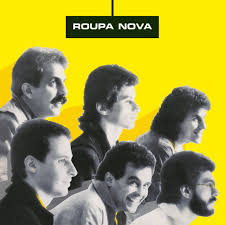

Whisky a Go-Go - Roupa Nova ![]()

A música 'Whisky a Go Go', um dos grandes sucessos da banda Roupa Nova, é uma verdadeira viagem no tempo que evoca a nostalgia dos anos dourados da disco music. A letra descreve uma cena típica de festa, onde a combinação de bebidas, como o gelo e Cuba Libre, e a música ambiente, especificamente a menção ao som de Johnny Rivers, cria um cenário perfeito para o romance. A referência ao 'Whisky a Go Go' remete ao famoso clube noturno de Los Angeles, que se tornou um ícone da música ao vivo e da cultura jovem dos anos 60 e 70, sugerindo uma atmosfera vibrante e cheia de energia.
A canção fala sobre a conexão entre duas pessoas em meio a esse ambiente festivo. A energia sentida 'na pele' e o ato de pegar 'de leve a mão' da pessoa amada são metáforas para a atração e o início de um flerte. A letra transmite a sensação de que o tempo passa rapidamente quando se está aproveitando um momento especial, 'a noite inteira passa num segundo', destacando como certas experiências parecem fugazes, mas deixam uma marca duradoura na memória.
O refrão, com a pergunta 'Do you wanna dance?' seguida pelo gesto de abraçar, é um convite clássico para dançar, simbolizando o desejo de proximidade e compartilhamento de um momento alegre. A repetição dessa pergunta e a afirmação 'Lembrar você um sonho a mais não faz mal' sugerem uma saudade carinhosa e a valorização das lembranças felizes.
A música, portanto, celebra o poder dos bons momentos e a importância de guardá-los na memória, mesmo que eles pareçam ser apenas um sonho distante.